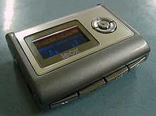

DescrizioneMP3, anche noto come MPEG-1 Audio Layer III e MPEG-2 Audio Layer III è un algoritmo di compressione audio di tipo lossy, sviluppato dal gruppo MPEG, in grado di ridurre drasticamente la quantità di dati richiesti per memorizzare un suono, mantenendo comunque una riproduzione accettabilmente fedele del file originale non compresso. La sua ideazione è dovuta a un team di lavoro istituito presso il CSELT e coordinato da Leonardo Chiariglione. |
 |
generalmente del tipo schede SD.
possono avere una batteria intercambiabile, che generalmente è di tipo stilo (AA) o ministilo (AAA).
Questi lettori, essendo dotati di disco rigido, hanno elevate capacità di memorizzazione, alcuni modelli superano gli 80 Gbyte. Quasi sempre sono equipaggiati con ampi display, spesso a colori, e di batterie di lunga durata. L'inconveniente principale è il peso, alcuni modelli superano i 200 grammi, anche se quelli più diffusi arrivano a 150 grammi.
Questi lettori essendo dotati di memorie flash dispongono di una capacità di memorizzazione molto più limitata dei modelli con hard disk. Attualmente i più capienti raggiungono i 64 GB. Il loro peso varia tra i 20 e i 100 grammi. Spesso hanno la forma di una penna schiacciata, in modo da poter essere agevolmente inseriti nelle prese USB dei computer con lo scopo di trasferire dati o canzoni
Questi lettori sono un'evoluzione dei classici lettori CD audio. Offrono infatti la possibilità di leggere, oltre ai classici CD audio, anche CD contenenti tracce musicali in formato MP3, o di rado anche di altri formati. Stanno lentamente scomparendo dal mercato, sostituiti da altri dispositivi. I motivi sono: le dimensioni, un CD ha un diametro di 12 cm e ha una capacità massima di 700 MB. Inoltre, durante il loro ascolto i CD sono soggetti a dei "salti", e sono dotati di poche funzioni. L'unico vantaggio, probabilmente, è che sono molto economici e in genere più semplici da usare.
←precedente